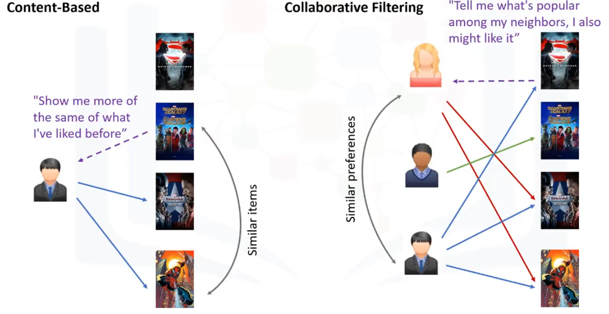

Información Personal
Nombre: Nayeli Grace Lazo Zurita
País: Bolivia
Ciudad : Cochabamba
Resumen Profesional
Soy una analista de datos e Inteligencia de Negocios apasionada por el análisis de datos y la aplicación de tecnologías de inteligencia artificial para resolver problemas empresariales. Mi objetivo es desarrollar habilidades sólidas en el manejo de grandes volúmenes de datos, modelado predictivo y visualización de datos para contribuir al éxito de las organizaciones en un entorno empresarial cada vez más competitivo.
Experiencia Laboral
-

Empresa Viva
Cargo Ocupado: Analista de Datos
Educación
-
Lugares De Estudio
Estudios Universitarios: Ciencia de Datos e Inteligencia de Negocios
Colegio : Angel Honorato Salazar
Colegio : Santo Domingo Savio
Colegio : Instituto de Educación Bancaria
Colegio : Albert Einstein
Habilidades
- Análisis de datos
- Programación en Python
- Manejo de bases de datos (SQL, NoSQL)
- Modelado predictivo
- Visualización de datos (Matplotlib, Seaborn, Tableau)
- Aprendizaje automático (Machine Learning)
- Inteligencia artificial
- Big Data
- Procesamiento de lenguaje natural (NLP)
- Minería de datos
Proyectos Destacados
-
Sistema de Recomendación de Películas
Descripción del Proyecto: Desarrollo de un sistema de recomendación de películas basado en el análisis de gustos y preferencias de usuarios.
Tecnologías Utilizadas: Python, Pandas, scikit-learn, Flask.
Resultados Obtenidos: Incremento en la satisfacción del usuario y aumento en la retención de usuarios.
-
Plataforma de E-commerce
Descripción del Proyecto: Creación de una plataforma de comercio electrónico para la venta de productos variados.
Tecnologías Utilizadas: HTML, CSS, JavaScript, PHP, MySQL.
Resultados Obtenidos: Aumento en las ventas y mejora en la experiencia de usuario.
-
Sistema de Análisis de Sentimientos en Redes Sociales
Descripción del Proyecto: Desarrollo de un sistema para analizar y clasificar sentimientos en publicaciones de redes sociales.
Tecnologías Utilizadas: Python, NLTK, scikit-learn, TensorFlow.
Resultados Obtenidos: Identificación de tendencias y opiniones de los usuarios para mejorar la toma de decisiones empresariales.